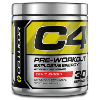

CURSO DE ACDEMIA pt1
nesse curso vc vai sabe tudo que sei sobre academia,nessa primeira aula vou ensinar com usar pre treino de maneira correta
curso de com usar pre treino
Leia as instruções: Siga as orientações específicas do rótulo do suplemento. Comece com uma dose menor: Se você é iniciante, comece com uma dose menor.
30-60 minutos antes do treino: Tome o suplemento 30 a 60 minutos antes do exercício. Misture com água: Misture o pó com água; evite bebidas ricas em cafeína. Não exceda a dose: Evite ultrapassar a dose recomendada para evitar efeitos colaterais. Monitore a resposta do corpo: Esteja atento à forma como seu corpo reage e ajuste conforme necessário. Combine com dieta equilibrada: Use o suplemento como complemento a uma dieta saudável.